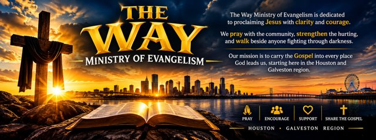

The WayMinistry of Evangelism
A Christian ministry of evangelism. We proclaim Jesus with clarity and courage. We pray with the community, strengthen the hurting, and walk beside anyone fighting through darkness.
“I am the way, the truth, and the life: no man cometh unto the Father, but by me.”John 14:6
Why “The Way”
“Jesus saith unto him, I am the way, the truth, and the life: no man cometh unto the Father, but by me.”John 14:6
Before anyone called them Christians, the first followers of Jesus were known as people of “the Way” (Acts 9:2, 19:23, 24:14). It was never a building. It was a road they walked with Him, and walked out into their cities.
That is the road on our logo. It runs straight to the cross, and the sun is already up.
What we do on the road
Four words are on our banner. Each one is something we do with people, not something we hand them.
-
Mile 1
Pray
“In every thing by prayer and supplication with thanksgiving let your requests be made known unto God.”Philippians 4:6
- We pray with the community, out loud and by name, wherever we are.
- Send us a request from this site and our prayer team carries it. You choose whether anyone else hears it.
- Send a prayer request
-
Mile 2
Encourage
“Fear thou not; for I am with thee: be not dismayed; for I am thy God: I will strengthen thee.”Isaiah 41:10
- We strengthen the hurting with Scripture, with time, and with someone who listens.
- Nobody has to have it together to talk to us.
-
Mile 3
Support
“Bear ye one another’s burdens, and so fulfil the law of Christ.”Galatians 6:2
- We walk beside anyone fighting through darkness, for as many miles as it takes.
- Walking beside someone means staying, not dropping off a pamphlet and leaving.
-
Mile 4
Share the Gospel
“For I am not ashamed of the gospel of Christ: for it is the power of God unto salvation to every one that believeth.”Romans 1:16
- We carry the Gospel into every place God leads us, plainly and without a sales pitch.
- It starts here, across Houston and down to Galveston.
- Read it in four lines
Four lines from Romans
This is the message we carry. If any of it raises a question, ask us. We would rather talk it through with you than have you nod along.
“For all have sinned, and come short of the glory of God.”
Romans 3:23“For the wages of sin is death; but the gift of God is eternal life through Jesus Christ our Lord.”
Romans 6:23“But God commendeth his love toward us, in that, while we were yet sinners, Christ died for us.”
Romans 5:8“That if thou shalt confess with thy mouth the Lord Jesus, and shalt believe in thine heart that God hath raised him from the dead, thou shalt be saved.”
Romans 10:9
Where the road starts

Our mission is to carry the Gospel into every place God leads us, starting here in the Houston and Galveston region. These are our neighbors, our streets and our shoreline.
Meeting times and outreach dates go here once they are set: [day, time and place]. Until then, the quickest way to reach us is the contact page.
What can we pray about for you?
One line is enough. You don’t need to leave your name.